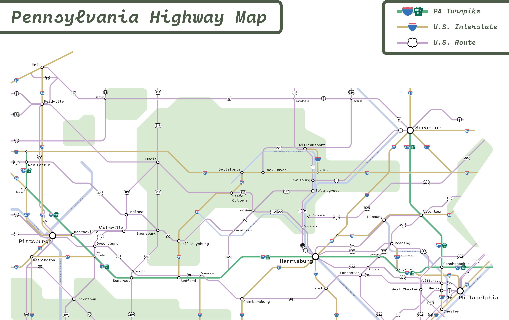

client: personal project
format: 24" wide, 18" tall print map
description: a map of pennsylvania's highways using a transit/schematic style. pennsylvania has a vast network of roadways, so i took it and transformed it into a style popularized by transit agencies' system-wide maps.
software used: QGIS, Adobe Illustrator